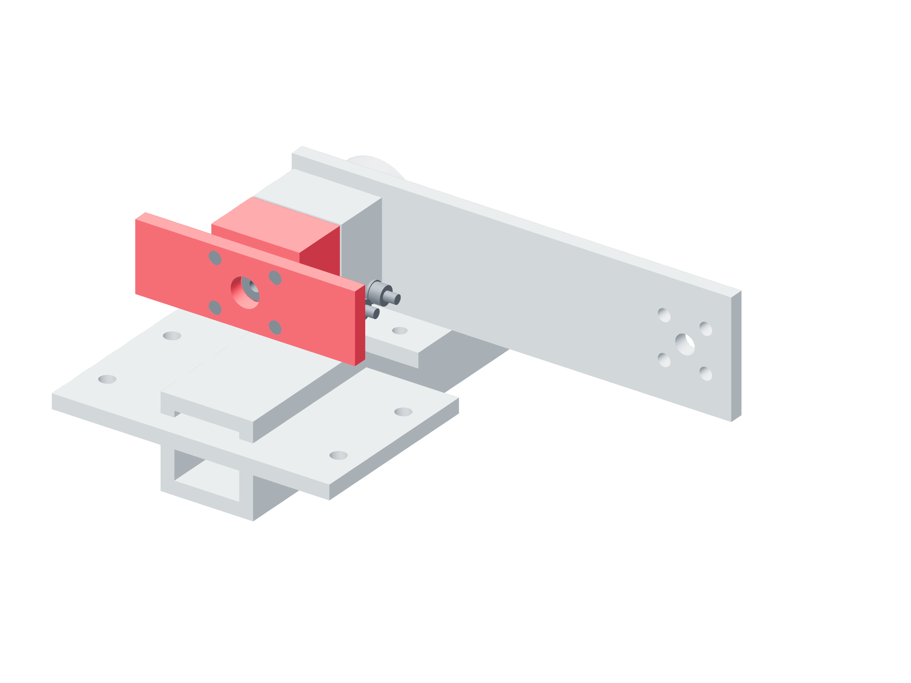

Preparation / hub qualification37 / 179
Attach the dedicated 140 mm proof lever
The balanced proof lever and its metal saddle place the gauge force in the lever’s axial midplane. The separate 100 mm service lever stays reserved for installed load measurement.
Addhub-proof-lever · hub-proof-load-saddle · two borrowed metal angles · four M5 × 45 · two M5 × 20 · one M5 × 25
Tools / setupHex keys / wrenches · caliper · specimen joint at qualified clamp setting

- Attach the proof lever to the specimen with four M5 × 45 bolts; the shaft center stays clear of the 12.5 mm bore.
- Transfer two 25.4 mm metal angles to the saddle. Use the M5 × 25 cross tie through the selected 140 mm load hole.
- Join the bridge to both angle feet with the two M5 × 20 screws. Confirm the gauge contact plane lies at the lever’s axial midplane.
- Measure actual pivot-to-force radius and prepare the opposite load hole for the second torque sign. Keep catch/keeper/companion clearance visible.
Ready when
Only the specimen hub connects the proof lever to its shaft, and the metal saddle carries the aligned load at the measured radius. An offset bolt-end contact, central shaft contact or overlapping hub face changes the bending/torque fixture. Unload and correct the metal load path.